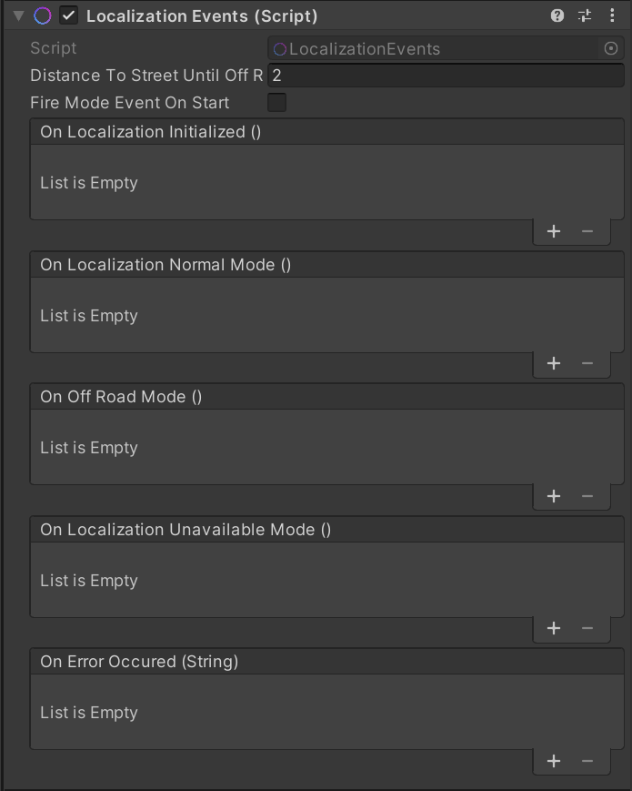
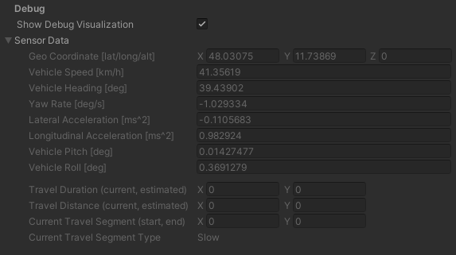

Localization Events & Sensor Data
In the ElasticSDK environment, the Player is moving through the virtual world, based on real-world localization data.
It is important to understand how this data is reflected in the virtual world to create content that offers an
acceptable user experience, even in suboptimal data quality scenarios.
Localization Events
Localization Events are a subcategory of the overarching Quality Events theme.
Localization Events are located on a component with the same name in the Holoride Player prefab. These events are meant to be hooks where your program flow can execute different behavior based on the different states of the real-world localization data.

| Setting | Description |
|---|---|
| DistanceToStreetUntilOffRoad | The distance in meters from the street until the player is considered to be too far away from the road and the OnOffRoadMode event is triggered. |
| FireModeEventOnStart | When enabled this component will fire the localization mode event for the current state when Unity's Start method is called on this component. |
| Event | Description |
|---|---|
| OnLocalizationInitialized | The event which is invoked when the localization becomes available and the pivot is set. |
| OnLocalizationNormalMode | The event which is invoked when the localization is available and we are on the street (up to the road distance threshold). |
| OnOffRoadMode | This event which is invoked when the localization is available but we are not on the road and the distance to the road is larger than the threshold configured in DistanceToStreetUntilOffRoad. |
| OnLocalizationUnavailableMode | This event which is invoked when the localization is unavailable and thus the player won't move even though the vehicle in the real world might. |
| OnErrorOccured | This event which is invoked when any localization error occurs. |
This component handles different localization quality events and reduces them to three distinct states:
- Normal:
This state represents good localization where everything works as expected. - Off-road:
This state is active when the localization is available but due to inaccuracies in localization or outdated Map data, the Player might not be on the road which the content should handle accordingly. The distance to the road until the player is considered to be "off-road" is adjustable and should reflect the requirements of the individual content. - Unavailable:
This state means that no localization information is available.
Provisions should be made for the content of an experience to respond to different localization states:
Since the Unavailable state does not show any movement at all, even though the vehicle may in fact be moving, it is suggested not to show any indication of false movement that occurs when the Player's localization is not present but the VR headset's IMU interprets a turning car as a head rotation.
In many scenarios, this means that it is not even recommended to show the player a world . The experience should start in this mode until localization is available and Map data is ready.
Caution
Any experience must be designed to reflect this state at any point in time to comfort the user in those situations where valid data is not available to present an elastic environment. One suggestion is to fade out the world when this mode is activated and fade it in once another state becomes active.
The other interesting state is the Off-road state where there appears to be normal localization but due to limited GPS reception (e.g. in a tunnel) the Player might be off the road. In this case the experience should make sure that the player is not colliding with any objects. How this is handled depends very much on the experience that is built and could range from unloading objects that are too close to loading a different scene. The Distance To Street Until Off Road setting for this mode makes it possible to tighten or loosen the constraints for this mode, depending on the individual content.
Sensor Data
The sensor data itself is transmitted from our service to the ElasticSDK at runtime.
A editor-only serialized version of the structured service values can be found on the Player component.

To obtain the structured service values programmatically, the StateReceiver API can be used.
The static VehicleSensorState member contains the same data that is serialized in the Player editor.
Additionally a custom IStateReceiverLocalizationEventListener can be registered to be notified whenever new sensor data arrives from the service.
The vehicle sensor state data is structured as follows:
| Data | Type | Description |
|---|---|---|
| GeoCoordinate | GeoCoordinate | Latitude, longitude and altitude of the vehicle. |
| VehicleSpeed_Kmh | float | Vehicle speed. |
| VehicleHeading_Deg | double | Heading amount provided by the GPS in degrees. |
| YawRate_DegPerSec | double | Vehicle yaw rate in degrees/s. |
| LateralAcceleration_ms2 | float | Lateral acceleration of the vehicle in m/s^2 |
| LongitudinalAcceleration_ms2 | float | Longitudinal acceleration in the vehicle in m/s^2 |
| VehiclePitch_Deg | float | Vehicle pitch amount in degrees. |
| VehicleRoll_Deg | float | Vehicle roll amount in degrees. |
| LocalizationStatus | VehicleLocalizationStatus | The current LocalizationStatus. |